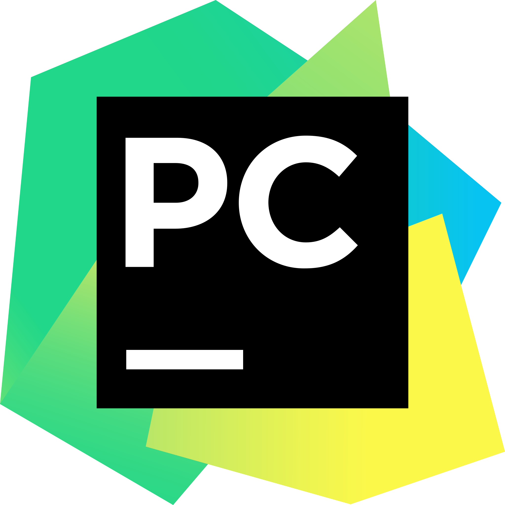
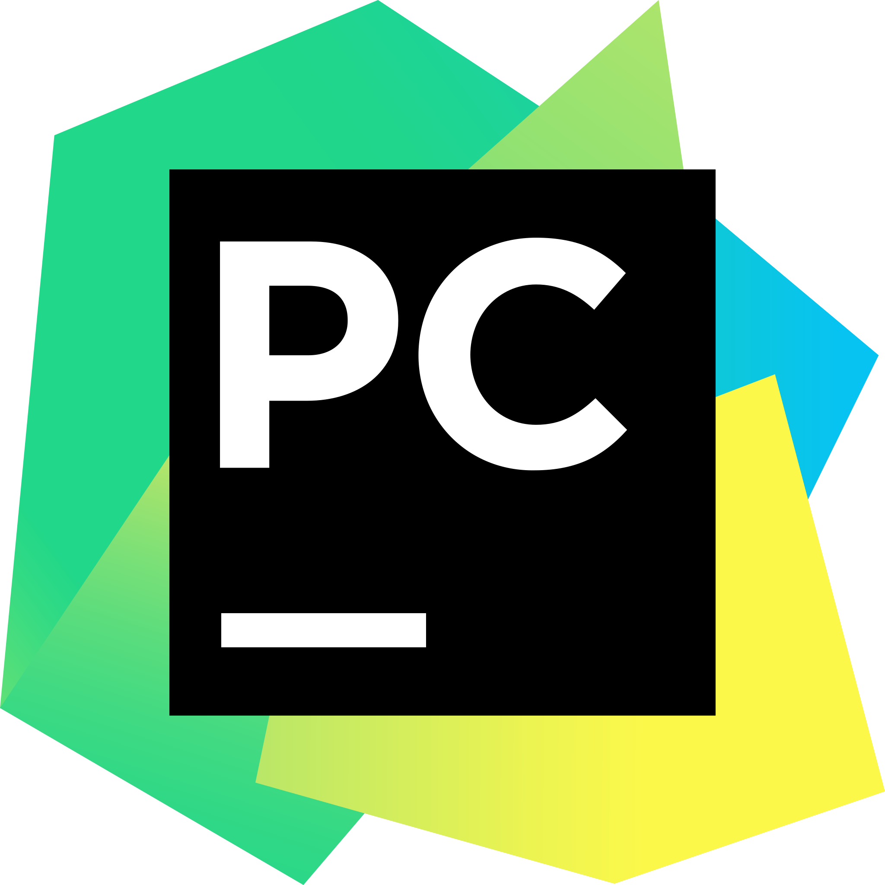

Ressources pour bien débuter en programmation
 

üíª Visual Studio Code (VS Code)
Éditeur léger et extensible, adapté à la majorité des langages. Extensions recommandées : Python, Pylance, GitLens.
T√©l√©charger VS Codeüêç PyCharm
IDE dédié à Python. La version « Community » est gratuite et idéale pour structurer vos projets Python et gérer les environnements virtuels.
Télécharger PyCharmProjet 1 : Game-Master


üéÆ Game-Master
Description : Collection de mini-jeux (classiques et modernes) optimisée pour la détente. L'application permet la création d'un profil utilisateur (pseudonyme + mot de passe) avec sauvegarde locale.
Fonctionnalités notables :
- Système de profils et sauvegarde (base SQLite :
data.db). - Personnalisation des noms via fichiers texte (
nom.txt). - Touche de sortie rapide configurée pour ouvrir une URL (option désactivable).
Technologies : Python 3.12 • Pygame
Demander l’accèsProjet 2 : FNAF Minecraft
üïπÔ∏è FNAF Minecraft ‚Äî point & click
Concept : Jeu point-and-click codé en Python, inspiré par l'univers de Five Nights at Freddy's, transposé dans un univers visuel proche de Minecraft. Le joueur doit surveiller des animatroniques (modélisés façon blocs), gérer l'énergie, et activer des pièges/portes pour survivre aux nuits.
Caractéristiques :
- Interface point-and-click (souris) adaptée au style Minecraft.
- Systèmes de surveillance, caméras, et événements aléatoires.
- Animations simplifiées des animatroniques (sprites et états).
- Codé en Python – compatible avec Python 3.10+ (Fichier jeu en .exe).
Remarque légale : Projet « fan-made » inspiré par la licence Five Nights at Freddy's. Il n'est ni officiel ni commercial.
Télécharger le projet (ZIP)